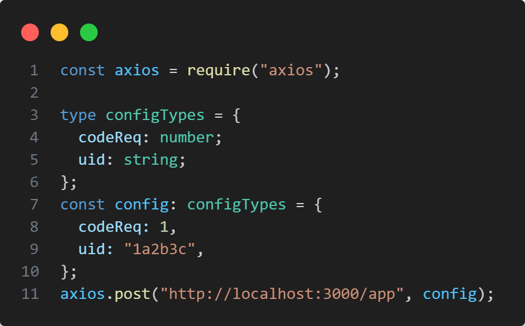
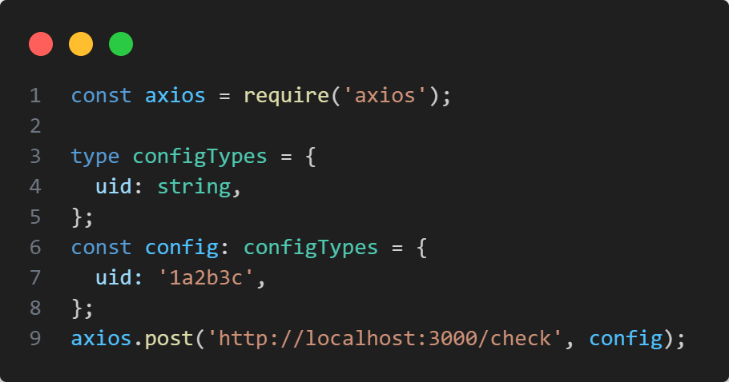
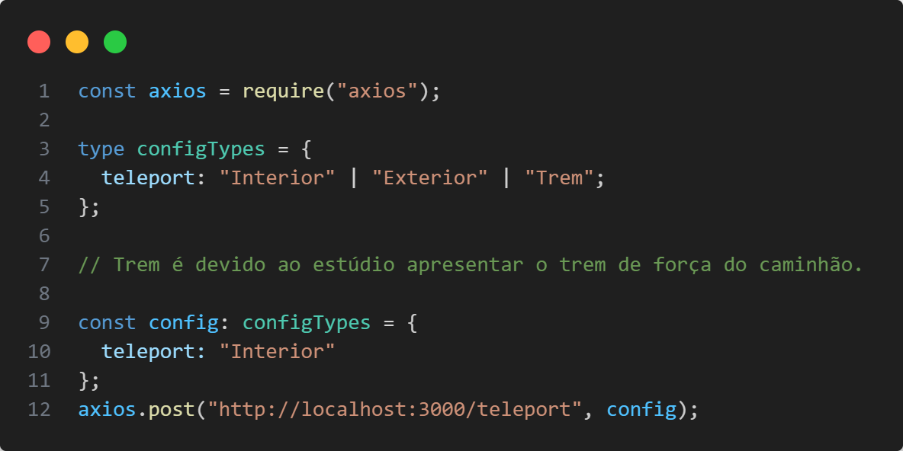

Métodos POST
/app
Recebe unicamente as requisições do aplicativo e grava no banco de dados o estado
| Parâmetro | Descrição |
|---|---|
| codeReq | Identificador de ação |
| uid | Identificador único do usuário |
Exemplo de request axios:
/check
Endpoint consumido apenas pela unreal engine para poder verificar os status de pendente do banco de dados
| Parâmetro | Descrição |
|---|---|
| uid | Identificador único do usuário |
Exemplo de request axios:
/teleport
Endpoint usado pelo aplicativo ao trocar de aba para enviar a localização do usuário para o banco de dados
| Parâmetro | Descrição |
|---|---|
| uid | Identificador único do usuário |
Exemplo de request axios:
